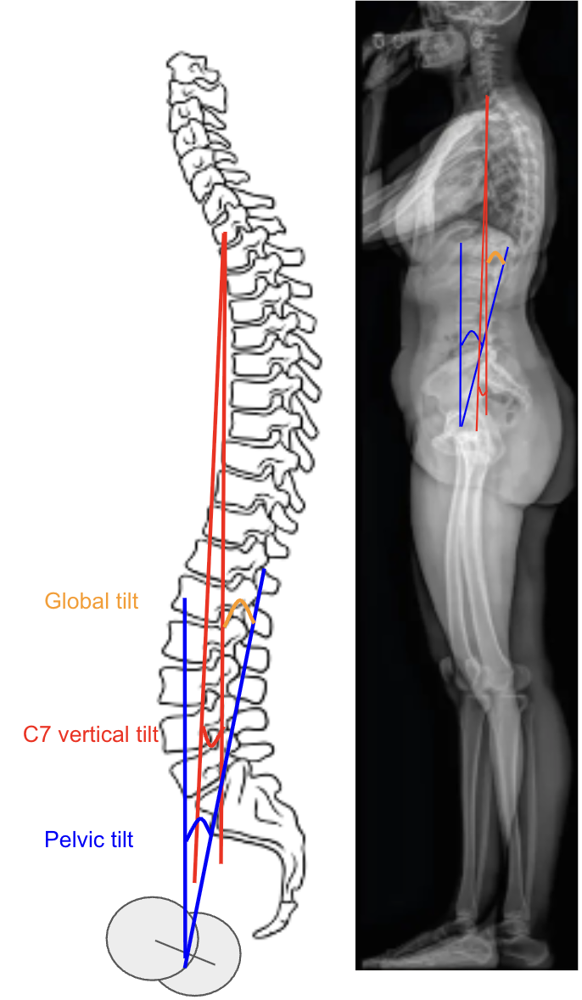

1) Description of Measurement
Global Tilt (C7 vertical tilt + pelvic tilt) is a comprehensive radiographic parameter that quantifies overall sagittal spinal alignment by combining spinal inclination (C7 vertical tilt) and pelvic retroversion (Pelvic Tilt).
It reflects the angular relationship between the upper spine and pelvis in maintaining upright posture, accounting for both thoracic inclination and pelvic compensation.
Mathematically: Global Tilt = C7 Vertical Tilt + Pelvic Tilt
Global Tilt correlates strongly with sagittal balance, spinal deformity severity, and functional outcomes. It is particularly useful in adult spinal deformity (ASD) assessment as a posture-independent parameter that integrates global trunk alignment and pelvic compensation mechanisms.
2) Instructions to Measure
3) Normal vs. Pathologic Ranges
Key Point:
Global Tilt > 45° is associated with reduced health-related quality of life and greater disability, often warranting sagittal realignment surgery in adult deformity.
4) Important References
Schwab F, Lafage V, Boyce R, Skalli W, Farcy JP. Gravity line analysis in adult volunteers: age-related correlation with spinal parameters, pelvic parameters, and foot position. Spine (Phila Pa 1976). 2006 Dec 1;31(25):E959-67. doi: 10.1097/01.brs.0000248126.96737.0f.
Protopsaltis T, Schwab F, Bronsard N, et al; International Spine Study Group. TheT1 pelvic angle, a novel radiographic measure of global sagittal deformity, accounts for both spinal inclination and pelvic tilt and correlates with health-related quality of life. J Bone Joint Surg Am. 2014 Oct 1;96(19):1631-40. doi: 10.2106/JBJS.M.01459.
Lafage R, Schwab F, Challier V, et al; International Spine Study Group. Defining Spino-Pelvic Alignment Thresholds: Should Operative Goals in Adult Spinal Deformity Surgery Account for Age? Spine (Phila Pa 1976). 2016 Jan;41(1):62-8. doi: 10.1097/BRS.0000000000001171.
Le Huec JC, Thompson W, Mohsinaly Y, et al. Sagittal balance of the spine. Eur Spine J. 2019 Sep;28(9):1889-1905. doi: 10.1007/s00586-019-06083-1. Epub 2019 Jul 22. Erratum in: Eur Spine J. 2019 Nov;28(11):2631. doi: 10.1007/s00586-019-06128-5.
Obeid I, Boissière L, Yilgor C, et al; European Spine Study Group, ESSG. Global tilt: a single parameter incorporating spinal and pelvic sagittal parameters and least affected by patient positioning. Eur Spine J. 2016 Nov;25(11):3644-3649. doi: 10.1007/s00586-016-4649-3.
5) Other info....
Global Tilt provides a posture-independent assessment of global sagittal alignment by combining spinal tilt (C7 vertical inclination) with pelvic compensation (pelvic tilt).
It offers a simpler alternative to the T1 Pelvic Angle (T1PA) when the upper thoracic vertebrae are obscured.
The angle captures both spinal inclination and pelvic retroversion, two main compensatory mechanisms for maintaining upright posture and horizontal gaze.
It is less affected by knee flexion or shoulder position than SVA, offering greater reproducibility.
Clinical correlations:
The measurement is particularly valuable in evaluating adult spinal deformity, flat-back syndrome, and post-fusion sagittal imbalance.
Use low-dose EOS imaging or stitched digital long-cassette X-rays for optimal accuracy.